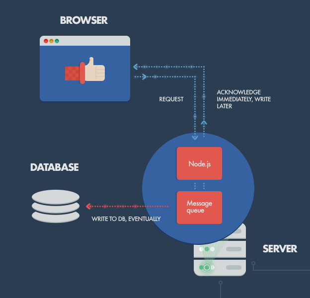

Server-side Development with Node.js

What do backend languages do?
What do backend languages do?
Three examples of interactions between an app’s frontend and backend such as:
- 1. Requesting a resource from an app’s home page like a specific page
- Example: a file is served by an application’s backend server

What do backend languages do?
- 2. Storing information and saving it in a database like PostgreSQL, MySQL or MongoDB
- Example: for an online bookstore user information(name, username, favorite book categories etc..) and book information(book title, year published, price, quantity available, etc...)

What do backend languages do?
- 3. Application user authentication
- Example: Logging in with local information (username and password) and social authentication(GitHub, FB, Google, etc...)

In summary...
Helpful ArticleWhat is Node.js?
- Node.js is an open source project designed to help you write JavaScript programs that talk to networks, file systems, or other I/O (input/output, reading/writing) sources
- aka. SERVER-SIDE JAVASCRIPT!!

But what does that mean?
- Low barrier to entry - if you know JavaScript, you'll learn Node in no time
- It gives you only what you need
- Great community and lots of open source node modules
- It's very fast at I/O operations
What does it actually do?
- Better ways to organize our code into reusable pieces
- Ways to deal with files
- Ways to deal with databases
- The ability to communicate over the internet
- The ability to accept requests and send responses
- The ability to deal with things that take a long time
Interactions
Single Thread

Let's watch this
Thanks Phillip!
Single Threaded
Node doesn’t pause for things to complete, it keeps running other processes when events take place, it is NON-BLOCKING EVENT-DRIVEN
Other programming languages have to have multiple threads to handle this type of concurrency but Node is single-threaded and uses its event loop to manage
YAY CALLBACKS
Asyc
Node does things asynchronously. V8 does not. (JS is also synchronous, but we have tricks!)
Node is made of...
- libuv (C++), a high performace, cross-platform evented I/O library
- V8
- Custom JS and C++ written for the platform

Review terms!
- Event-driven
- Non-blocking
- Concurrent connections
- V8 engine
- Levels of abstraction and machine code
Installing Node
Go here!You will also install npm as you install node.js!
Node REPL Shell
- REPL: Read-Eval-Print Loop
- Go to your Terminal and type in `node`
- This will open an interactive node shell where you can execute any Javascript
- To exit, type ctrl+c two times
> var string = 'hello';
> string
'hello'
> string + ' world'
'hello world'
More on REPL
In a REPL, the user enters one or more expressions and the REPL evaluates them and displays the results.
- The read function accepts an expression from the user, and parses it into a data structure in memory.
- The eval function takes this internal data structure and evaluates it.
- The print function takes the result yielded by eval, and prints it out to the user.
- The development environment then returns to the read state, creating a loop, which terminates when the program is closed.
A handy visual
REPL
How would you test a boolean in Node's REPL?
Exercise
Let's write your first Node.js program. Create a new folder called "Node_Practice". Inside that directory make a new file called main.js. Place this code inside.
console.log('Hello World!');
Save that file by clicking command+s and go to your Terminal in your IDE. Type in the following and hit enter.
node main.js
Congrats!
You just executed your first node.js program. Now for the cool stuff.

Let's Put the I in I/O
Add a new file in your Node_Practice directory called 'dinosaurs.txt'. Copy this list of awesome dinosaurs and paste it in your file.
Go back to your main.js file.
var fs = require('fs');
var cwd = process.cwd();
fs.readFile(cwd + '/dinosaurs.txt', function(err, data) {
console.log(data.toString());
});
Now go to your Terminal and run it:
node main.js
What is going on?
We used a module to pull in code, read an external text file, and converted the contents of that file from a Buffer to a string
Modules
A module is a JavaScript library/file that you can import into other code using Node's require() function.
The require function is part of CommonJS.
Types of modules
Node has three sources of modules
- Built-in modules, like 'fs' for the filesystem, 'http' for accessing the web, and 'os' for accessing the operating system
- Your project files
- NPM
Using require()
You can do require for a sub-folder require(“./other/foo”) as well as up and over require(“../lib/over”)
GREET EXAMPLE
Creating your own modules
You will want to create your own modules, because this allows you to organise your code into managable parts — a monolithic single-file application is hard to understand and maintain.
Using modules also helps you manage your namespace, because only the variables you explicitly export are imported when you use a module.
You can do module.export multiple times in the same file
Modules
Resources
ES6 Alert!
ES6 has a new way of creating modules in JavaScript, this is something that most languages has but JS has not taken advantage of until now.
ES6 modules have the same principle (ie having code in modules and then letting certain parts be accessed)
This hasn't been added into Node yet, but peeps are working on it
Parsing Text
Now let's turn the text into an array:
var fs = require('fs');
var cwd = process.cwd();
fs.readFile(cwd + '/dinosaurs.txt', function(err, data) {
var data = data.toString().split('\n');
console.log(data[0]);
});
And run the program again.
What did we just do?
- Used fs, one of Node's core modules
- Read an external text file
- Converted the contents of that file from a Buffer to a string
What happens if we don't convert data to a string?
Try removing '.toString()' from that line and running the program again.
What the heck is a buffer?
A buffer is a temporary holding spot for data being moved from place to another. Enough data has to be collected in order to perform a specific process with it (like buffering a video!).
JS can work with Unicode but it isn't too great with binary data. When dealing with TCP streams (moving files across the Internet) or the file system, it's necessary to handle octet streams (binary data flow).
Node has several strategies for manipulating, creating, and consuming octet streams.
Buffer
Raw data is stored in instances of the Buffer class.
What we care about is that a Buffer is a byte array that can be converted to a human-readable string by adding .toString()
ES6 is adding some new features to make this a bit easier. Stay tuned!
Let's Develop It
In your main.js file, change 'dinosaurs.txt' to 'people.json' and paste the json from here:
We can use the same fs.readFile function to read JSON. Remember we need to convert the Buffer to a string. This time we'll also parse that string back into JSON.
fs.readFile(cwd + '/curriculum/class1/people.json', function(err, data) {
var data = JSON.parse(data.toString());
console.log(data);
});
Parsing JSON
Now use your Javascript knowledge to select individual people in the object.
data.people
data.people[0]
Have your program return the eye color of the person at the 3rd index.
Next up: A simple HTTP server
We're going to use node's http module to create a server. Create a new file called server.js
var http = require('http');
http.createServer(function(req, res) {
res.writeHead(200, {'Content-Type': 'text/plain'});
res.end('Hello World!\n');
}).listen(9000);
console.log('Server running on port 9000');
Now run your progam again and in your browser navigate to localhost:9000
DANCE PARTY
You just wrote your first web app! Node is launching a web server locally. You now have a web server running on your computer.
HTTP and Headers
Information about what is being transmitted and what type of information(MIME type)
MIME stands for Multipurpose Internet Mail Extensions. Read more here
Ports
Ports are used to route web traffic. You can use them for all kinds of tasks.
For dev purposes, try to keep it over 1000.
A port and an IP together make a web socket. Sockets can be left open or closed.

Breaking down the rest of the code
- Requiring the HTTP library
- We then ask HTTP to create a webserver for us. (you don't need to write any more code than that!)
- The server receives a request and gives a response
- For this program we are only worrying about the response. This is sent with a header that says, "hey browser, given 200, here is what I will be giving you"
Breaking down the rest of the code
- We are just giving text in this example. We could be sending html/css/json or other things.
- .end will end the response and serve up all the data (in this case "Hello World") and finish. .end wraps up all your data and sends it back
- Chaining!
- Port listening
Listeners
In the browser, the JS event loop is constantly listening with its event loop (for when events are triggered in the DOM)
The same happens in Node! There are listeners (like http requests or internal events, responding to a request)
Nodemon
Allow changes without having to stop and restart server
npm install -g nodemon
Run nodemon main.js and try making changes!
Putting it all together
This exercise combines using an HTTP server and reading files. The goal is for your server to respond with the contents of a file.
- Create a new Javascript file called file_parser.js
- Create a new text file called mytext.txt and write something fun in it
- In your JS file, create a new HTTP server and have it write some text in the response
- Instead of writing text read mytext.txt into HTTP server's response
NPM: Node Package Manager
Utility for downloading packages for Node.js applications
Can use to install front-end code, add dependencies, and build tools too!

Package vs Module
Difference between a module and a package?
A module is a single JS file that has some functionality and won’t impact other code in the rest of the application unintentionally.
A package is a directory with one or more modules inside of it and a package.json file that has information about the modules inside
Using NPM
Finding a project online or collaborating
- Clone the project that you want to work on with git (or sourcetree) and make sure it has a package.json
- Then navigate to directory that has the source code.
- Then type "npm install" in the Terminal. This will load your dependencies.
- Then run the "npm start" command. This will only work if the program you downloaded has a start script.
- List of shorthands
Exercise
Clone this repo, install npm, and start the npm scripts
Using NPM
Starting your own project
- Creating a package.json. This will track dependencies you are using in the project, and is an easy way to create scripts (instead of using tools like grunt and gulp)
- The command is "npm init" in the directory you want.
Practice Project
- Enter the command
npm install vaca --save - Create a index.js file and add:
const vaca = require('vaca');
console.log(vaca());
node index.jsGlobal Packages
A global package allows that package to be able to create commands that can be used in the command line (like yarn or grunt or gulp. It can be used across your projectson your computer.
Command for seeing the global packages on your computer: npm list -g --depth 0
Exercise
Create a package.json file for the Node_practice project we worked on
Semantic Versioning
There is a structure to how developers keep track of the iterations of a package or dependency
Example: 1.8.3
- 1 is the "major version" and if this is updated, it will break currently functionality
- 8 is the "minor version" and usually indicates a new feature has been added but functionality is not changed.
- 3 is a patch or small fix.
Checking your versions
- The tilde (~) matches the most recent minor version (the middle number). ~1.2.3 will match all 1.2.x versions but will miss 1.3.0.
- The caret (^), on the other hand, is more relaxed. It will update you to the most recent major version (the first number). ^1.2.3 will match any 1.x.x release including 1.3.0, but will hold off on 2.0.0.
- "npm update" will update all of your dependencies that are compatible.
What is Express?
- Most widely used Node.js framework. Makes it a billion times easier! (like jQuery for the frontend)
- Most applications are built with express or another framework instead of using bare Node without a framework
- Routing with HTTP request methods
- Requests and responses: Requests made to a certain route will return a page for that specific route
- Sending files
Using Express
Navigate to your Node_Practice directory and type npm install express (this is NOT global)
Check out your node_modules folder in VSCode
var express = require('express');
var app = express();
app.get('/hello.txt', function(req, res){
res.send("Hello World");
})
var server = app.listen(8080, function() {
console.log('Listening on port 8080');
})
Code Breakdown
- Do I (as Node) have Express? No? Let me find it and bring it into our project.
- Let me create an instance of express with this express function. The variable 'app' is now how we will operate our web server.
- Remember HTTP verbs??
- Everytime someone calls get on this file "hello.txt", we are going to send them "Hello World"
- Then I will start up an instance of the server!
Routes
Express makes it really easy to have routes on your webserver (like to your homepage or about page, etc)
So, you can have a lot of gets (and posts) for the different pages on your site.
Exercise
Create another get that sends a message to someone using your app in another page.
Static Assets
The HTML, CSS, JS, fonts, and images of your website/web app are static assets because they are not changed. They live on your server and need to be sent exactly as they are saved.
This is done over a "public" directory so you don't have to send each item individually. Thanks Express!
You don't want your server -side assets to be public, just your static assets.
Serving Static Files
var express = require('express');
var app = express();
app.use(express.static(__dirname + '/public'));
var server = app.listen(8080);
All together
Git clone this repository, and cd into the node_exercises/static_assets folder
Make sure you understand the code, install express, and run the app!
Check out the Network tab in the Dev tools
Parameters
Sometimes we need to be able to change the content of a page without having to create an entirely new page.
IMDB example
var express = require('express');
var app = express();
app.get('/celebrity/:name', function(req,res){
res.setHeader('Content-Type', 'text/plain');
res.send("You picked " + req.params.name);
});
var server = app.listen(8080);
Practice
- Trying running npm install --save express (only if this project already has a package.json file.
Posting
Check out node_exercises/posting folder. Run npm install and look at all the code
Body-parser? Express itself does not understand JSON because it remains flexible to understand other languages (like XML). So this parser gives Express the tools to understand JSON.
Review
Check out the final project app in the code you cloned
Watch This Node Module in the Web Developer Course!Click here for Node Documentation
Resources and Exercises
- Code School, with interactive Node.js lessons to help you review
- Art of Node, by Max Ogden
- Learn You Node, another interactive intro